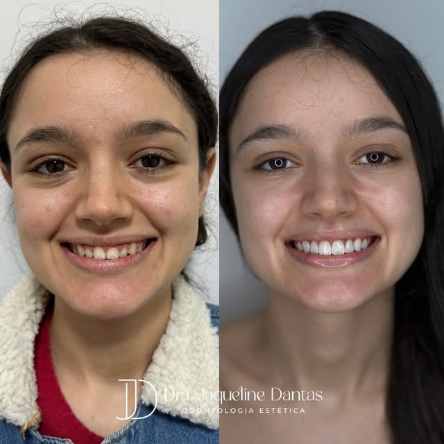
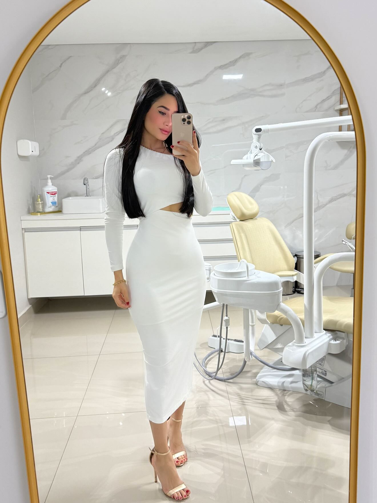
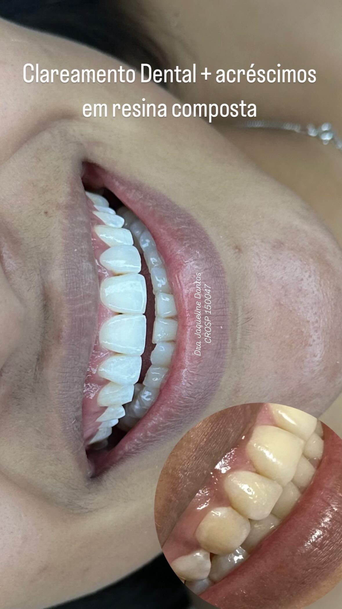
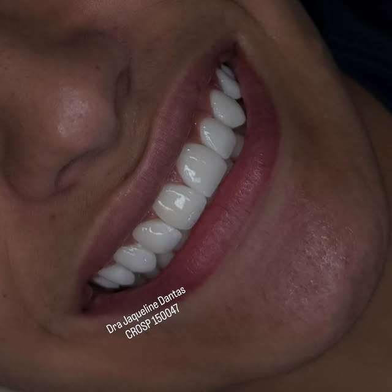
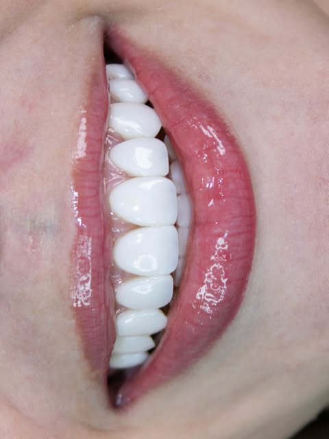
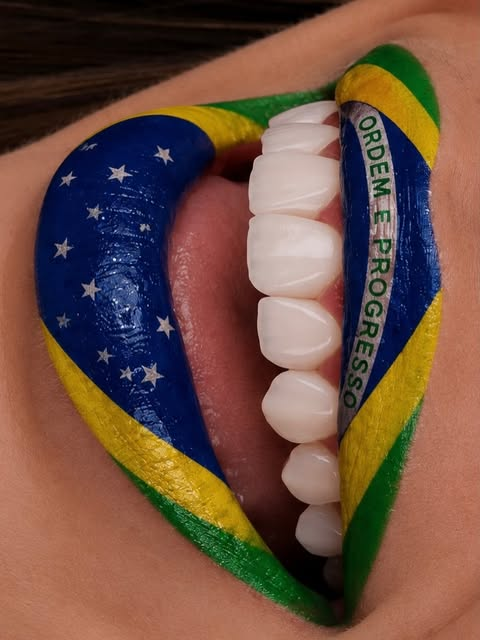

Carrossel
Comparativo do sorriso

Ver carrossel e legenda no InstagramDRA. JAQUELINE DANTAS · CRO-SP 150047
Odontologia, reabilitação oral e estética.
Um novo olhar para o seu sorriso.

Cada sorriso tem uma história.
O seu cuidado também deve ter.
Sou a Dra. Jaqueline Dantas, cirurgiã-dentista, com atuação em clínica geral, reabilitação oral e estética.
Este é um espaço para você conhecer as possibilidades de cuidado e dar o primeiro passo: uma conversa sobre o que deseja para o seu sorriso.
Conheça meu dia a dia no InstagramConheça os tratamentos.
A indicação começa com uma avaliação individual.
A resina composta é moldada sobre a face visível do dente. A dentista trabalha o contorno, a textura e a cor de cada faceta de acordo com o sorriso.
Por que considerar a resina? Como a dentista esculpe a faceta diretamente no dente, o tratamento pode exigir menos consultas e preservar mais esmalte. Se uma borda lascar, muitas vezes é possível reparar só aquela área.
Com o tempo: a resina é mais suscetível a manchas e desgaste do que a porcelana.
A faceta de porcelana é uma peça de cerâmica feita sob medida para recobrir a parte da frente do dente. Gire a peça para observar a curvatura e a borda de perfil.
Por que considerar a porcelana? A cerâmica mantém bem a cor e resiste ao desgaste. A peça é feita sob medida, e a dentista confere o formato, a cor e o encaixe antes da fixação.
No planejamento: a confecção da peça costuma envolver mais etapas e um investimento maior. A necessidade de preparo do dente depende da avaliação.

O gel clareador age sobre os pigmentos que dão cor aos dentes naturais. Com a ação do gel, esses pigmentos ficam menos visíveis e o sorriso pode ganhar uma tonalidade mais clara. Na avaliação, a dentista verifica a origem das manchas e indica a técnica adequada.
Conhecer as possibilidadesÉ um tratamento planejado para recuperar a função e a aparência do sorriso quando há dentes desgastados, danificados ou ausentes. Dependendo do caso, pode envolver restaurar dentes ou substituir os que faltam para melhorar o conforto ao mastigar.
Falar sobre meu casoA indicação e os resultados dos tratamentos dependem da avaliação e das características individuais de cada paciente.

Ver carrossel e legenda no Instagram
Ver fotografia e legenda no Instagram
Ver publicação no Instagram
Ver publicação no InstagramEntre em contato pelo WhatsApp e fale sobre o motivo da sua consulta.
Consulte a disponibilidade e combine o agendamento diretamente no atendimento.
Na avaliação, tire suas dúvidas e conheça as possibilidades para o seu caso.
Toque em “Agendar avaliação” para abrir o WhatsApp. O horário será combinado e confirmado durante a conversa com o atendimento.
A escolha é feita após avaliação individual. Você pode apresentar suas expectativas e conversar com a dentista sobre as opções indicadas.
O orçamento depende do tratamento e das necessidades identificadas na avaliação. Entre em contato para entender como funciona a consulta.
Visite o Instagram @drajaquelinedantas para acompanhar os conteúdos publicados pela profissional.
SEU PRÓXIMO CAPÍTULO
Atendimento pelo WhatsApp · (11) 98618-3972
Instagram · @drajaquelinedantas